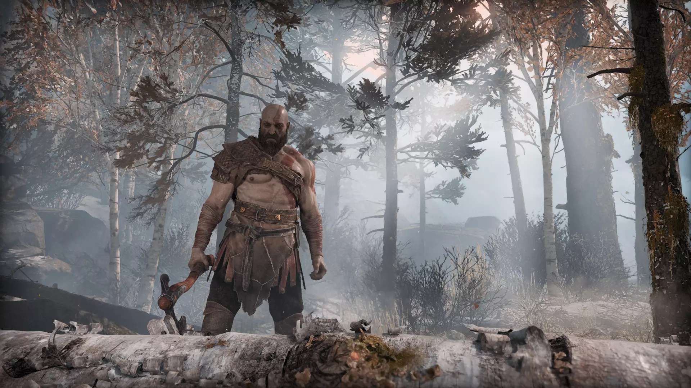
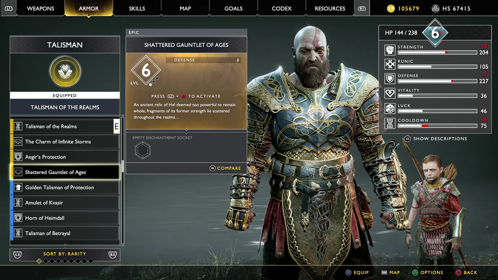
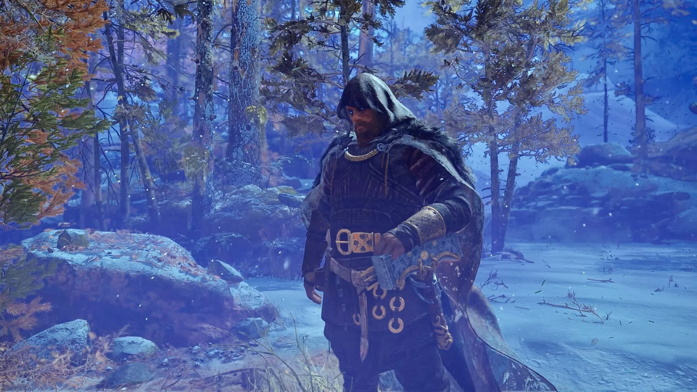

God of War is an action-adventure hack and slash video game developed by Santa Monica Studio and published by Sony Interactive Entertainment. It was released worldwide on April 20, 2018, for the PlayStation 4 with a Microsoft Windows version released on January 14, 2022.This game has bagged the Game of the Year award and there is no doubt it smashed as a AAA title game. its the 11th game of the gow series and was one of the most awaited games for hack and slash lovers.
Before we Skip to the good part lets check whether your system has what it takes to run this beast. u see what i did there:
If your pc is passes these criterias congrats you are eligible to go on one hell of a journey with kratos and his son atreus who are on a journey to fulfill the dying request of her second wife Faye that her ashes be spread at the highest peak of the Nine Realms. This game is a cinematic masterpiece!The way the story unfolds and the detail to world design is just outstanding. The game packs the punch of the old game mechanics of health and and attack with a lot of variations in armour magic weapon and special moves.I personally loved the little puzzles in between the journeys which are neither as hard as the puzzles you might have solved in prince of persia nor as easy as assassins creed making it quite fun while keeping the game focus on story and action.
While the first seven games were loosely based on Greek mythology, this episode is loosely inspired by Norse mythology, taking place several decades after God of War III 2010.Six of the nine realms of Norse mythology can be explored. Predating the Vikings,most of the game takes place in ancient Scandinavia in the realm of Midgard, which is inhabited by humans and other creatures. It is the same realm in which the Greek world exists.
The reason this entry is considered an Easter Egg is that despite it being an ability Atreus can learn, it's hidden in a very special chest that players have to go out of their way to find. The chest in question can be found at the top of the Light Elf Outpost and upon opening it, players will imbue Atreus with the ability to summon the legendary Norse squirrel known as Ratatoskr.Depending on what type of arrows Atreus had equipped, Ratatoskr will dig up either rage or health stones in an attempt to aide the player as best as it can.
There is fricking infinity gauntlet in this game which has 6 slots for enchantments just like the one in marvel. It is called Shattered Gauntlet of Ages in the game. Here is the guide link for your lazy ass to get the gauntlet.
after completing the main story line there is a secret ending that you can access. If you return to the old home in the woods several years will seem to pass and on one fateful day a hooded man cast in lightning will appear and reveal that he's wielding Mjolnir, Thor's hammer!
If you look at the ceiling in the old house you will find out that Atreus was no other than your favourite god of mischief that is Loki!
This game has been awarded the game of the year and already crossed a gross sale of more than a million Copies.This stagering
number of copies sold mark its absolute beauty and quality. God of war is Avaliable on both PlayStation and PC.
You can headover to Epic games or steam to get this game now.
Buy God of war PC on
Epic games
Buy God of war PC on
Steam
Buy God of war for PlayStation on
PS store
The game has already been leaked on several websites like: fitgirlrepack and 1377x.
Note: I do not intend to support or promote any kind of piracy and believe that you should buy the game
and support the creators